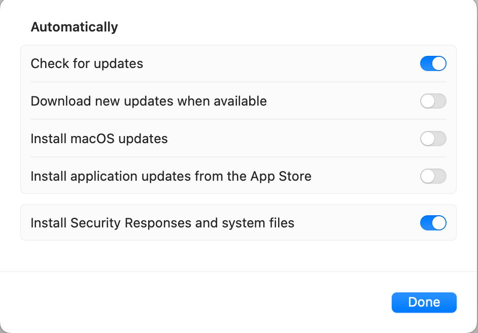
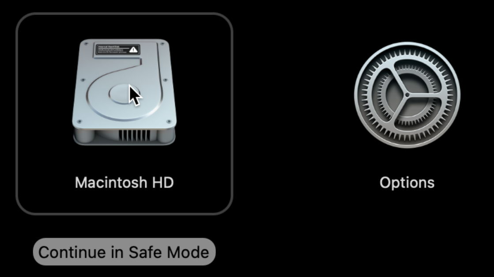
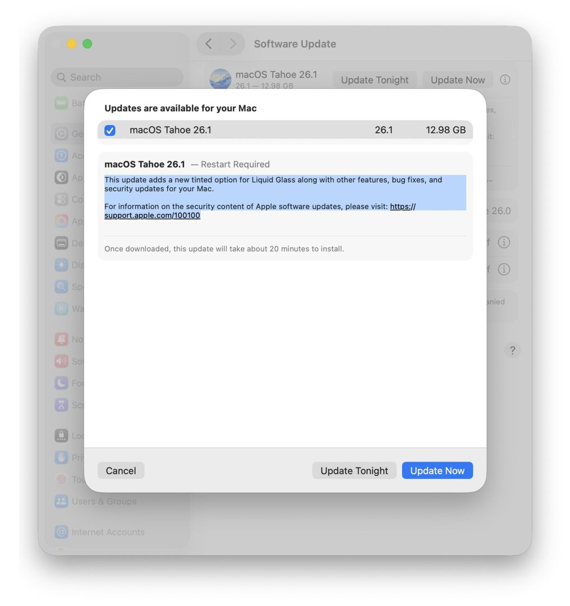
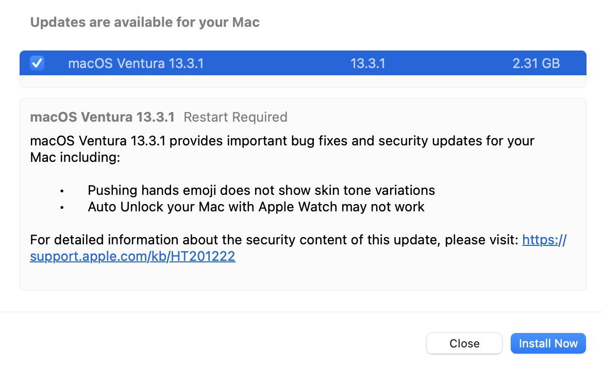
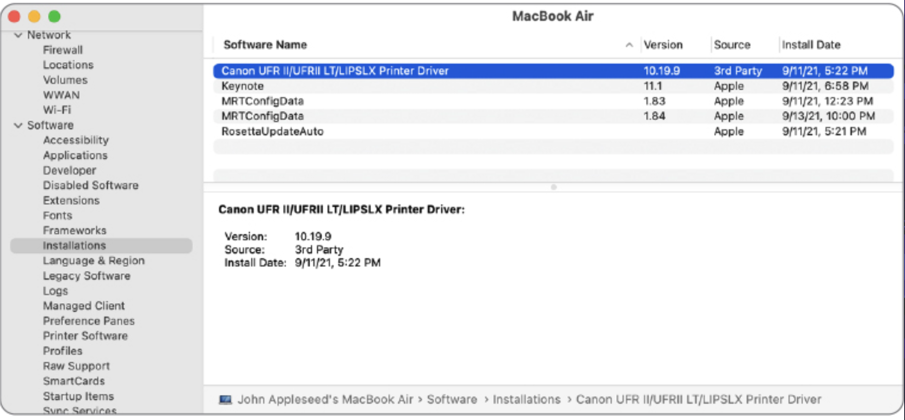
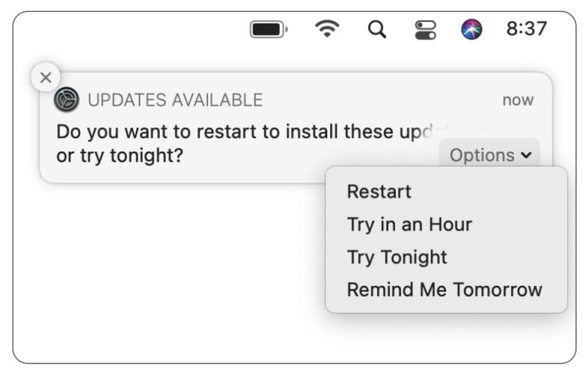
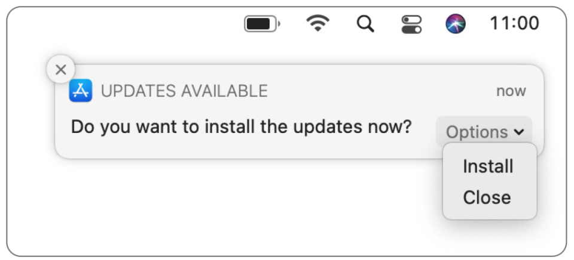
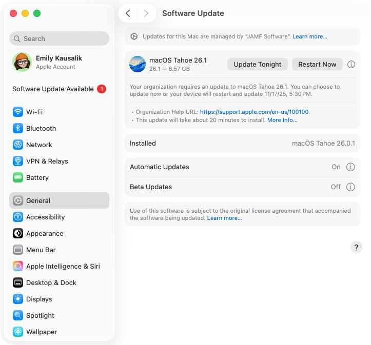

שיעור 12: עדכונים ושדרוגים¶
מדריך עזר לתלמיד
🎧 סקירה (פודקאסט)¶
סיכום שיעור
נושאי השיעור¶
- ארכיטקטורת העדכונים המודרנית ב-macOS 26 (FSM, Pallas, Streaming Decompression ו-UpdateBrain).
- אבטחה והרשאות ב-Apple Silicon: הרשאות Standard Users, Volume Ownership ו-Cryptexes (BSI).
- כלי ה-CLI softwareupdate, המלכודות ב-Migration Assistant וסולם פתרון תקלות.
- תיבול ארגוני: Declarative Device Management (DDM), השהיות (Deferrals) ו-Bootstrap Token.
מונחי ליבה ומושגים¶
| מושג | רקע ומשמעות ארגונית |
|---|---|
| Update (עדכון) | עדכון מינורי בתוך אותה משפחת גרסאות (למשל מ-26.2 ל-26.3). כולל תיקוני באגים וטלאי אבטחה. |
| Upgrade (שדרוג) | שדרוג דור ראשי לגרסת מערכת הפעלה חדשה (למשל מ-macOS 26 ל-27). כולל תכונות תשתיתיות חדשות. |
| Pallas | שרת העדכונים המרכזי של אפל (mesu.apple.com/assets/macos/), המספק קטלוגים מותאמים אישית לדגם המק ולקהל היעד. |
Content Caching (AssetCacheServices) |
שירות מטמון מקומי ברשת הארגונית המיירט הורדות של שרתי אפל וחוסך תעבורת WAN עצומה. |
| UpdateBrain | רכיב תוכנה בינארי היורד עם חבילת העדכון ואחראי לבנות את ה-SSV החדש, לעדכן את ה-RecoveryOS ולפרוס קושחה. |
| Volume Ownership & Secure Token | מנגנון קריפטוגרפי ב-Secure Enclave. ב-Apple Silicon, אישור עדכון דורש שיוך של בעל כרך (Volume Owner). |
| Bootstrap Token | מפתח הצפנה ייעודי המופקד ב-MDM בעת ה-Enrollment, ומאפשר לשרת לבצע עדכונים שקטים ואוטונומיים עבור משתמשי Standard. |
| DDM (Declarative Management) | מודל ניהול עצמאי שבו ה-MDM מכריז על מצב יעד ודדליין מקומי, וה-Mac מנהל ומבצע את האכיפה והאתחול בעצמו. |
| Cryptex & BSI | Cryptographically Executable — אימג' מוצפן המולבש מעל ה-SSV ומאפשר הזרקת עדכוני אבטחה ל-Safari/WebKit ללא בניית SSV מחדש. |
חלק 1 — ארכיטקטורת העדכונים המודרנית ב-macOS 26¶
שרשרת העדכון מקצה לקצה¶
ב-macOS 26, תהליך העדכון פועל כמכונת מצבים סופית (Finite State Machine) ללא כתיבה לקבצי מערכת פעילים:
1. סריקה מול Pallas: תהליך softwareupdated בודק זכאות וגרסה מול mesu.apple.com.
2. חישוב שטח (CalculatePrepareSize): המערכת מחשבת שטח כפול עבור ה-Snapshot, שטח ל-Cryptex (1.2x), ומפעילה את deleted(8) לפינוי שטח Purgeable.
3. הזרמה וחילוץ בזמן אמת: קובץ ה-Zip נחלץ כזרם (Stream) ישירות תוך כדי ההורדה לנתיב /System/Library/AssetsV2/.
4. בנייה ע"י UpdateBrain: שירות ה-UpdateBrainService יוצר Snapshot חדש, מעדכן את Rosetta ואת ה-RecoveryOS במקביל.
5. חתימה אישית (Personalization): אימות מול gs.apple.com והחלפת מצביע הבוט (SFR) באתחול.
← המנגנון של APFS Snapshots וחישוב שטח ה-Purgeable נלמד לעומק בשיעור 06 ובשיעור 07 — כאן רואים כיצד מערכת ההפעלה סומכת על מנגנון ה-SSV כדי לעדכן ללא זמן השבתה.
חלק 2 — אבטחה ב-Apple Silicon: הרשאות ו-Cryptexes (BSI)¶
מי רשאי לעדכן?¶
- בממשק הגרפי (GUI): החל מ-macOS 12.3, כל משתמש Standard מקומי יכול לאשר עדכונים ושדרוגים דרך הגדרות המערכת, בתנאי שהוא מחזיק ב-Secure Token (Volume Owner).
- בטרמינל (CLI) ומתקינים מלאים (UMA): נדרשות הרשאות מנהל מקומי (Local Administrator /
sudo).
טכנולוגיית ה-Cryptex ו-Background Security Improvements¶
- מהו Cryptex? אימג' דיסק מוצפן המאוחסן ב-Preboot ומורכב בשכבה עליונה מעל ה-SSV הנעול.
- מאפשר להזריק עדכוני אבטחה קריטיים לאפליקציות ורכיבי מערכת ללא צורך בבנייה מחדש של ה-SSV כולו.
- Rollback מיידי: במידה ועדכון שבר תאימות עם כלי פנימי, ביטול ה-BSI ב-System Settings מורה ל-Bootloader לדלג על טעינת ה-Cryptex באתחול הבא.
חלק 3 — כלי ה-CLI softwareupdate, ה-Migration Assistant ומדריך תקלות¶
פקודות CLI מרכזיות (softwareupdate)¶
# הצגת כלל העדכונים הזמינים למכשיר
softwareupdate -l
# הורדת מתקין מלא (Universal Mac Assistant - UMA) לתיקיית Applications
softwareupdate --fetch-full-installer --full-installer-version 26.3
# התקנת כל העדכונים ואתחול אוטומטי
sudo softwareupdate -i -a -R
מלכודות Migration Assistant בארגון¶
מדוע להימנע מהגירה עיוורת בארגון?
- התנגשות UIDs: יצירת אדמין זמני (UID 501) והגירת משתמש עם אותו שם גורמת לדריסה או העברה ל-
/Users/Deleted Users/. - Dirty Migration: גרירת Kexts ו-LaunchDaemons מיושנים מאינטל שפוגעים ביציבות המק ב-Apple Silicon.
- המלצת התעשייה: מעבר למודל Cloud-Native Ephemeral Device — הגדרה נקייה דרך ה-MDM וסנכרון קבצים ישירות מהענן (OneDrive / Google Drive).
סולם פתרון התקלות המלא (Troubleshooting Ladder)¶
- שלב 1 (איפוס שירות ורשת):
sudo killall softwareupdatedובדיקת פורט 443 מולgs.apple.com. - שלב 2 (פינוי שטח Purgeable):
tmutil thinlocalsnapshots / 10000000000 4. - שלב 3 (ניקוי Staging פגום): אתחול למצב Safe Mode.
- שלב 4 (פתרון הברזל): כניסה ל-1TR Recovery ובחירה ב-Reinstall macOS (הורדת SSV חדש מבלי לגעת במידע המשתמש!).
חלק 4 — תיבול ארגוני: DDM, השהיות ו-Bootstrap Token¶
השוואה: Legacy MDM מול Declarative Device Management (DDM)¶
| מאפיין | Legacy MDM (העידן הישן) | Declarative Device Management (DDM מודרני) |
|---|---|---|
| מנגנון תפעול | שרת שולח פקודות בודדות (InstallASAP) וממתין לפולינג |
שרת שולח הכרזה (Declaration) והמק מנהל את התהליך אוטונומית |
| לוח זמנים ואכיפה | שברירי; תלוי בחיבור רשת רציף וניתן לדחייה ע"י המשתמש | דדליין מקומי קשיח לפי שעון המחשב (למשל 18:00 מקומי בכל סניף בעולם) |
| חוויית משתמש | התראות פשוטות שקל להתעלם מהן | מדרג התראות מובנה: תזכורות יומיות, ספירה לאחור בשעה האחרונה, ואתחול כפוי |
| אישור חומרה | דרש סיסמה ממשתמשים ללא הרשאות | עושה שימוש עצמאי ב-Bootstrap Token לאישור שקט של ה-LocalPolicy |
מדרג השהיות עדכונים (Software Update Deferrals - עד 90 יום)¶
- Major OS Upgrade Deferral (60–90 יום): מונע מעובדים לשדרג לגרסת macOS ראשית חדשה עד לאישור תאימות אפליקציות ארגוניות ע"י ה-IT.
- Minor OS Update Deferral (7–14 יום): מאפשר בדיקת טלאי מערכת נקודתיים בצוותי פיילוט.
- Non-OS / Security Updates (0 ימי השהיה): עדכוני Safari ו-Background Security Improvements מוחלים מיד להגנה מפני Zero-Day.
- Content Caching בארגון (
AssetCacheServices): יירוט הורדות Pallas וניתובן לשרת מטמון מקומי ב-LAN לחסכון ברוחב פס.
# בדיקת סטטוס הפקדת Bootstrap Token מול ה-MDM
sudo profiles status -type bootstraptoken
# ניקוי מקומי של השהיות MDM (דורש הרשאות אדמין)
sudo softwareupdate --clear-deferrals
קישורים מומלצים ולקריאה נוספת¶
- Manage software updates in Apple Platform Deployment - המדריך הרשמי לאכיפת עדכונים, DDM והשהיות.
- Install software updates for Mac
- Taking manual control of macOS updates with softwareupdate - מדריך מקצועי לשימוש ב-CLI.
- What to do when a macOS update goes wrong - מדריך פתרון תקלות מקיף לכשלים, Boot Loops ואי-התאמות בעדכוני מערכת.
🎬 סרטון סיכום¶
עזרים ויזואליים¶
המחשה ויזואלית (עזר לתלמיד)
תמונות אלו ממחישות את הממשק או המנגנון הרלוונטי לנושא השיעור.







